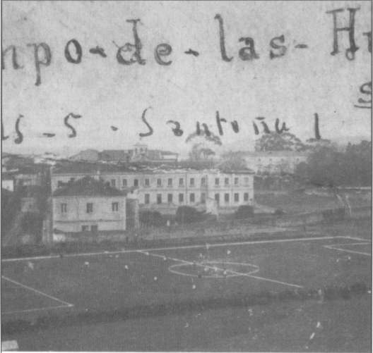

Año 1920.- La explanada del viejo cuartel de Regimiento de Infantería, llamada "Campo de las Heras", fue utilizada por el primer equipo de fútbol de Santoña, que se llamó "El Paloma", donde se realizaban tanto los entrenamientos, como los partidos oficiales. (Fuente: Ayuntamiento de Santoña)
 |